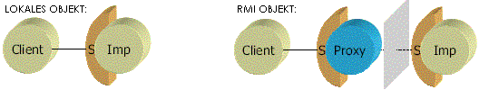

Ein Serverobjekt implementiert das Interface
| RMI |
|
| 1. Wie läuft der Aufruf einer Methode an einem entfernten Objekt in RMI ab? | ||
| Aufruferseite wird über ein Interface angesprochen Ein Serverobjekt implementiert das Interface |
||
| 2. Nennen Sie zwei Unterschiede eines Interfaces für ein RMI Objekt zu einem Interface für lokale Obejekt bei gleicher Funktionalität. | ||
 |
||
| 3. Wovon erbt ein Objekt, das per RMI aufrufbar sein soll? | ||
| UnicastRemoteObject | ||
| 4. Wie unterscheidet sich der Aufruf einer Method an einem RMI Objekt von dem an einem lokalen Objekt? | ||||||||||||
|
||||||||||||
| 5. Was macht das rmic Programm? | ||
| Compiler für Verbindungsstücke (Stub und Skeleton) Verbindungsstücke werden automatisch erzeugt |
||
| 6. Welche Komponente übernimmt die Rolle des Brokers bei RMI? | ||
| RMIRegistry (Verzeichnisdienst für Objekte) | ||
| 7. Wie kommt ein Client-Objekt zu einer Referenz auf ein entferntes Objekt? | ||
| 8. Welches URL-Schema bezeichnet RMI Objekte und wie ist es aufgebaut? | ||
| 9. Wie findet man eine Registry auf? | ||
| 10. Was ist ein Callback und was muss man in RMI dafür tun? | ||
| 11. Was ist Serialisierung und warum ist sie bei RMI notwendig? | ||
| 12. Welches Sicherheitsproblem entsteht durch Objektserialisierung? | ||
| 13. Wieviele Threads können in einem RMI-Objekt aktiv sein? | ||
| Man muss immer davon ausgehen, dass Methoden nebenläufig aufgerfen werden. | ||